The process — decompose it forward, then transfer to any city
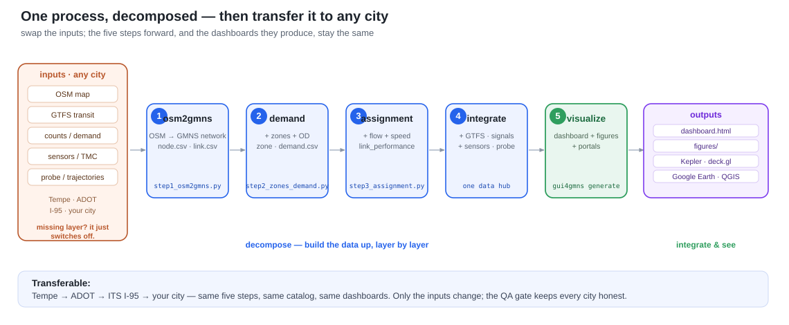
Five steps forward (osm2gmns → demand → assignment → integrate → visualize); swap the
city's inputs and the steps + dashboards stay the same. ▶ see it run on Tempe, AZ ·
details in the GMNS → dashboards skill.
The output — one GMNS folder opens in every portal
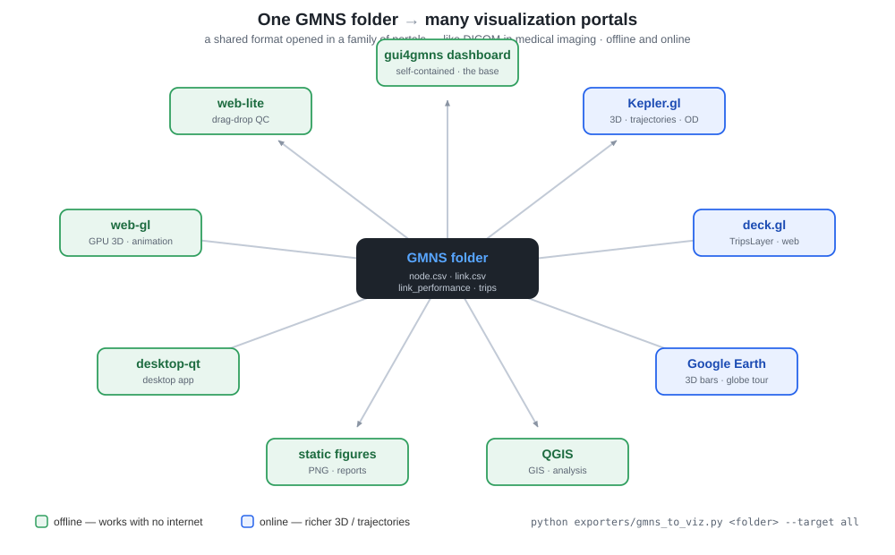
pip install gui4gmns
Datasets
What each demo network exercises
Template gallery
Catalog-driven dashboard templates by category
Skill: GMNS → dashboards
Convert any city (package + LLM), data elements & QA
▶ Integrated dashboard
One map: switch city, basemap, MoE (volume/speed/V-C), OD lines, click-to-inspect
▶ AZ city dashboard
Switch across 7 Phoenix-metro cities on one map (OSM)
▶ GMNS 3D (beta)
volume→height, speed→color — traffic overlay for a 3D city base (strategy)
▶ I-405 N — observed (Caltrans PeMS)
Real 5-min speed+flow, AM peak — recurrent bottleneck from measured detectors
▶ I-405 N — QVDF model
Calibrated QVDF speed from inflow demand/capacity — full day, D/C ratio on hover
▶ I-95 3D TMC timeline
Real 24h×15-min speeds — play the corridor: baseline → bottleneck → spillback → recovery
▶ Event playbook (queue + incidents)
Time slider with measured queue spillback + blocked-link events firing on the clock
▶ I-880 N — incidents (Caltrans PeMS + CHP)
Oakland AM peak — real 5-min speeds with CHP incidents firing on the timeline: baseline → collision → spillback
▶ TrafficFlowBench Visual Analytics
Inspect network, state, queues, OD/path flows & incident evidence from GMNS freeway benchmark data
TMC playbook
Operations vocabulary, event storyline, visual grammar & fidelity ladder
See it — real networks in real portals
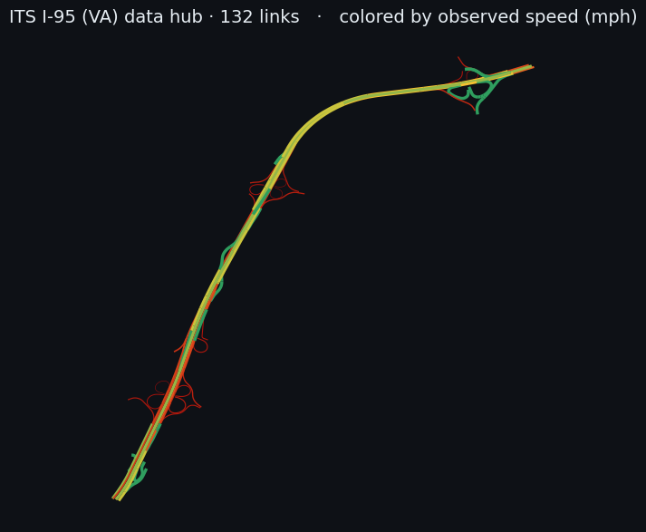
▶ full data hub · Kepler.gl · deck.gl · Google Earth
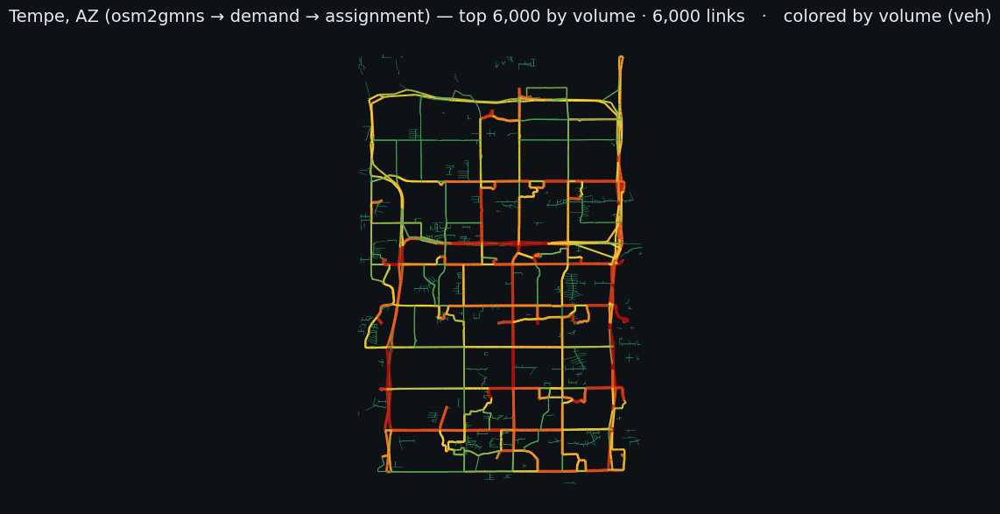
osm2gmns → demand → assignment,
colored by assigned volume (arterials red, local streets green). The transferable process, run on a real city.▶ Kepler.gl · deck.gl · Google Earth · files
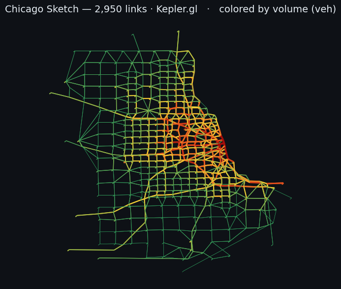
▶ Kepler.gl · deck.gl · Google Earth (KML) · files
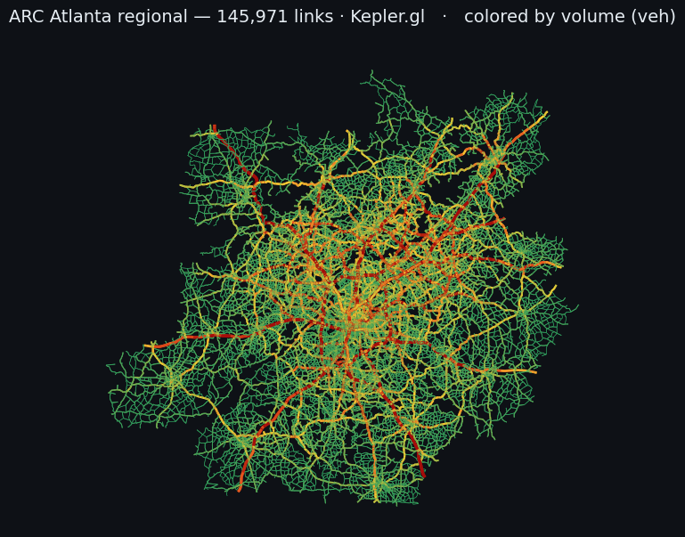
▶ Kepler.gl · deck.gl · Google Earth (KML) · files
Arizona — PHX metro, city by city (OpenStreetMap only)
Every AZ network here is built only from public OpenStreetMap via osm2gmns (each fetched from OSM by city, clipped to its real OSM city boundary — blue outline). No agency travel model. ▶ open the city-by-city dashboard — one page, switch across all seven cities on an interactive map. Every map is stamped "Source: OpenStreetMap via osm2gmns."
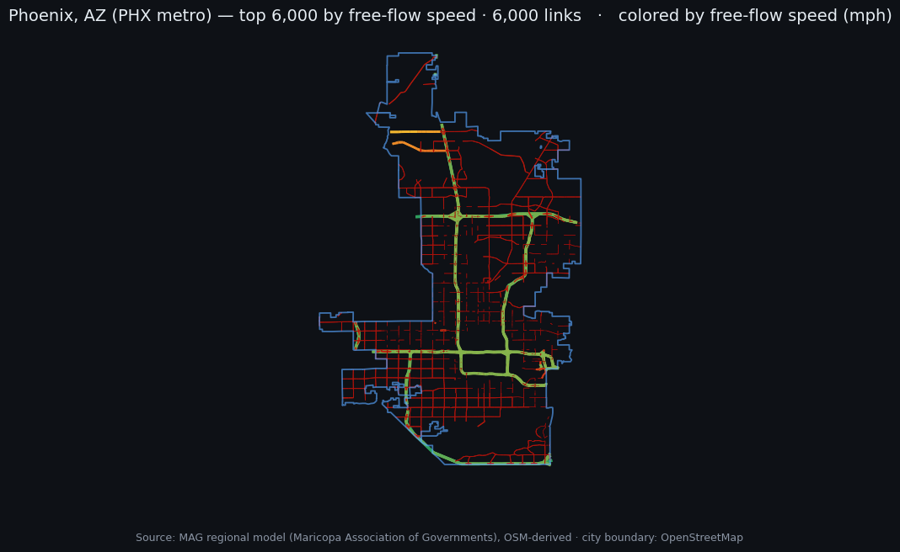
▶ Kepler.gl · deck.gl · Google Earth
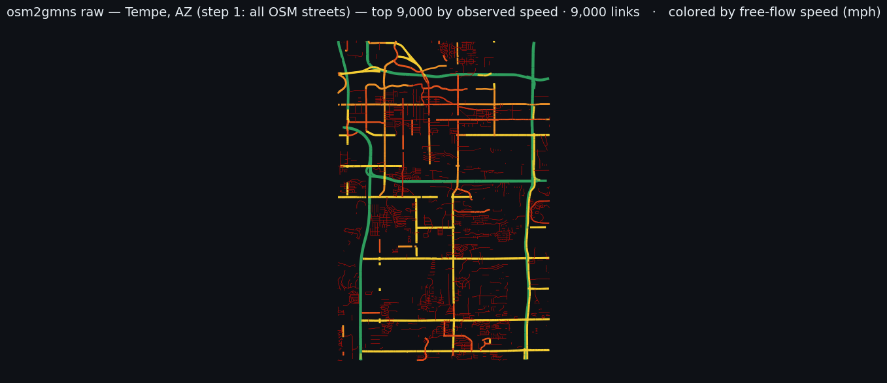
▶ Kepler.gl · deck.gl · Google Earth
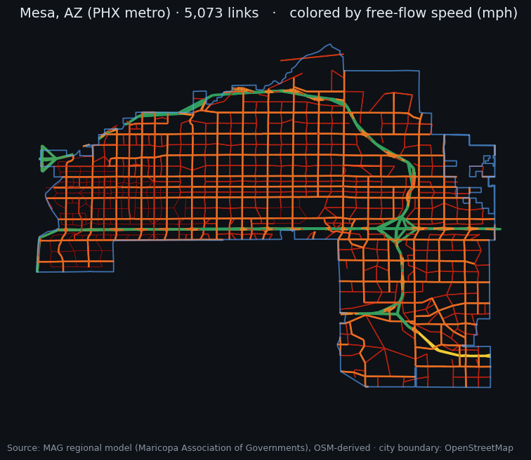
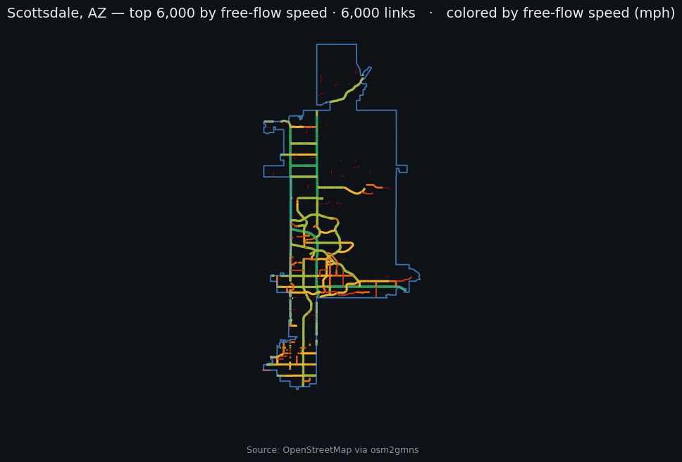
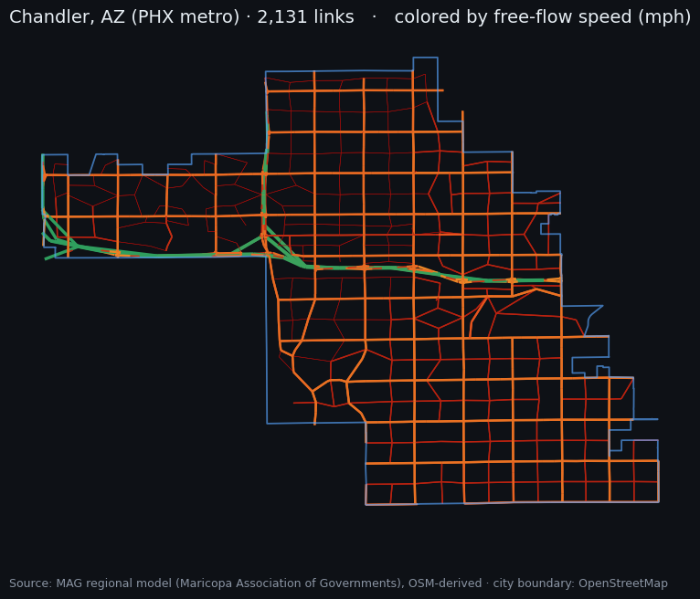
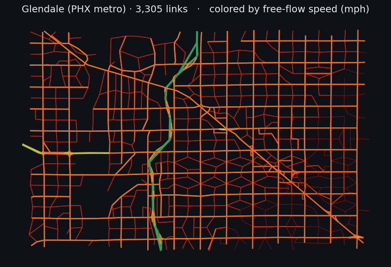
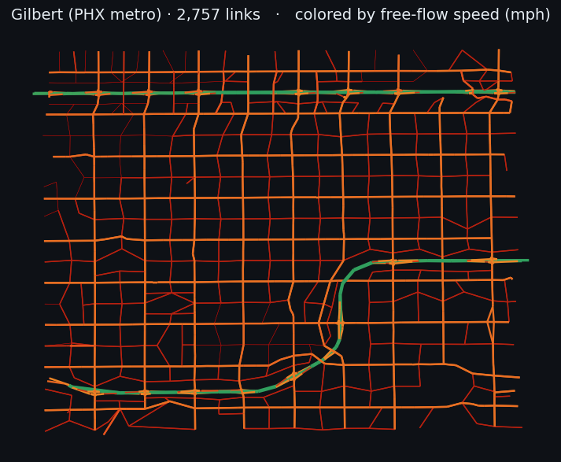
Offline by default (open the dashboard with no internet); online portals — Kepler.gl, deck.gl, Google Earth — add richer 3D and trajectory exploration. Everything here is generated by AI from a GMNS folder; ask it for the same views on your own data.